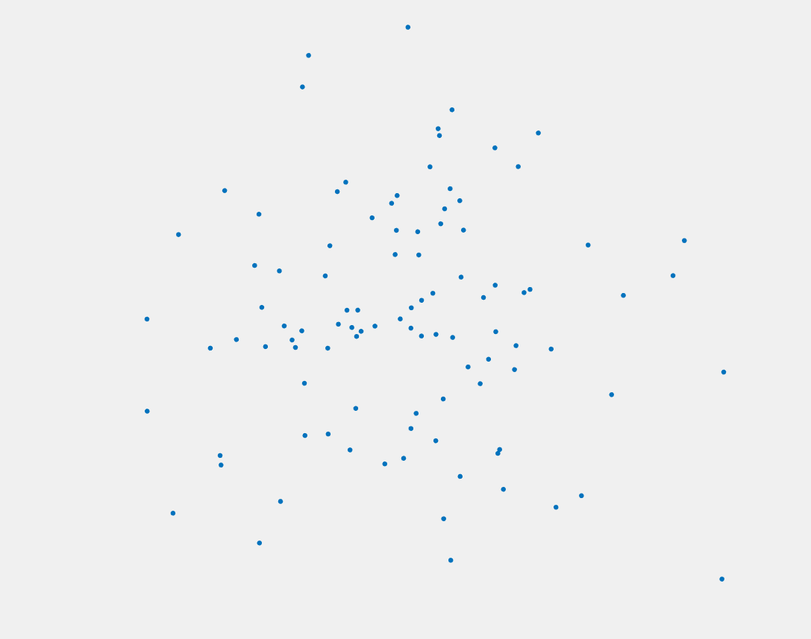
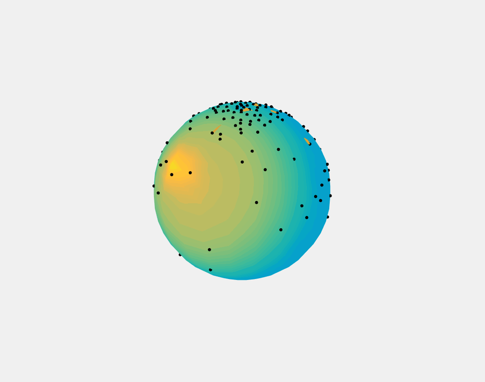
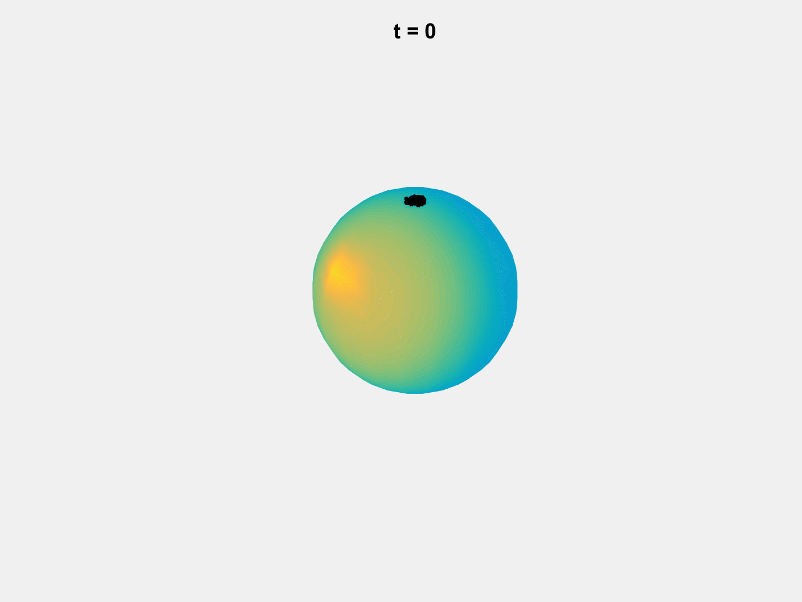

An Analogy of Self-organization on the Sphere:
Imagine a group of anti-social ants on a piece of concrete. If they want to be as far as possible from every other ant without losing social construct, how would they arrange themselves? According to this simulation, they would always spread themselves evenly in a disk shape.
Now imagine a group of anti-social ants on a tiny earth, so tiny that the ants can sense how far they are from each other by smell - as one ant produces odourous particles that travels along the surface of the earth to another ant. It turns out, they would always spread themselves evenly to the entire earth. Notice the highlighted paths of certain ants.
What if there was a barrier at the equator? Will the ants be more densely packed the closer they are to the equator? It turns out, only ants right on the equator are crowded, while every other ant gets their personal space as if the barrier doesn't exist.
